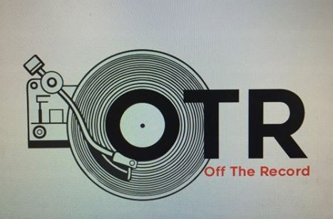

Submit a Review
- Sign In


OTR has got a new logo! The logo, which was designed by renowned designer, Mitchell O’Regan, will be incorporated into the website and merchandise over the next two months. This has been the product of several months work on behalf of the OTR team and Mitchell.
We'd love to hear your views on the new logo. Feel free to contact us with your views and opinions.
Tremonti will play dates across the UK and Europe this summer in support of new album A Dying Machine. Tremonti have revealed details of a headline UK and European tour which will get underway this summer.
The run of shows have been scheduled in support of the band’s upcoming studio album A Dying Machine, which will be released later this year via Napalm Records, with further details to follow in due course. The run of live shows will start in Munich on June 18 and wrap up with Mark Tremonti, Eric Friedman and Garrett Whitlock’s appearance at Wacken Open Air on August 2. Tickets will go on sale from 10am tomorrow (Friday, March 2) via Tremonti's official website.
Record Store Day is coming up on April 21, and that means plenty of splashy new vinyl releases. Some will resurrect some good and obscure recordings, and some will feel like redundant cash grabs. The three just-announced new David Bowie releases due to come out that day will hopefully fall into the former category. Welcome to the Blackout (Live London ’78), the 3XLP set featuring recordings from two London shows on Bowie’s ambitious Isolar II tour from 1978 (a great year for him), seems like the main attraction. There’s also the Let’s Dance 12″ featuring the iconic ’80s single’s early demo version and a live rendition (a version of that demo was released in January), and the first official release of the promo-only 1977 compilation Bowie Now.
A day prior to RSD (April 20), Parlophone will also release a limited-edition 45th anniversary reissue of 1973’s Aladdin Sane on silver vinyl. Just prior to that–on April 13–a CHANGESTWOBOWIE reissue is due out. The label also re-released the entirety of Bowie’s “Berlin trilogy” (Low, Heroes, and Lodger) on February 23.
Tool fans are an enthusiastic bunch, and their favorite band is infamously withholding about new music. (They haven’t released an album since 2006’s polarizing 10,000 Days.) So it’s not surprising that they got riled up when Maynard James Keenan, the band’s mercurial leader, tweeted—and then deleted—a message that the music is almost finished for the band’s long-talked-about fifth album.
In 2008, Keenan told MTV that Tool would begin working on a new LP “right away,” and fans have been waiting and speculating for a decade since then. Things have gotten more fervent recently, with the band’s return to semi-regular live shows and hints dropped by members and other ’90s rock luminaries that the record may finally be on its way. Earlier this month, Keenan tweeted and posted to Facebook a message that he’d “started getting music files from the boys w the word FINAL in the title a few months ago after 11 years of begging,” and that he’d written lyrics and vocal melodies for all but one song. At some point between now and then, however, Keenan deleted the tweet, and as Alternative Nation notes, fans on the Tool subreddit are mildly freaking out.
Tool fans can take comfort in the fact that the Facebook post is still live. On the other hand, if it is an accurate update, Maynard hasn’t even finished writing yet. It sounds like he’s working with demos, and the instrument’s aren’t yet tracked. Even if it’s all true, the record is probably a ways away from release. We reached out to a representative of the band, who said there is “no news as of yet” about the record.
Tired of reading lazy reviews from the same reviewers?
Well, here at OTR we want YOU to be the voice. You do the reviews, you get the rewards!
Interested? Find more information here

Depeche Mode
Spirit

Korn
Follow the Leader

Chelsea Wolfe
Hiss Spun